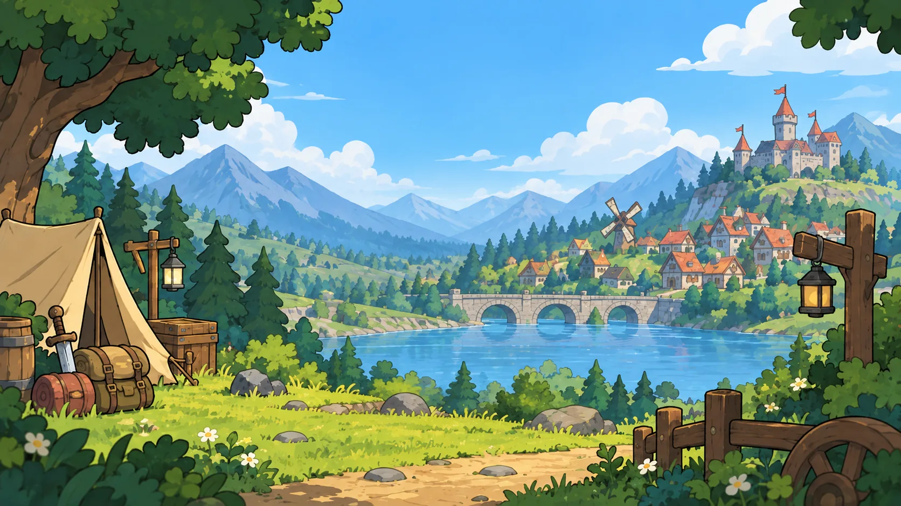
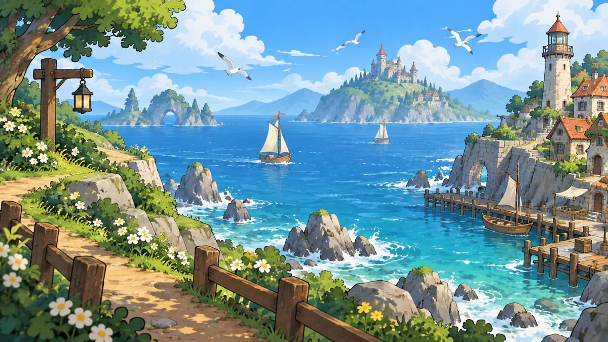
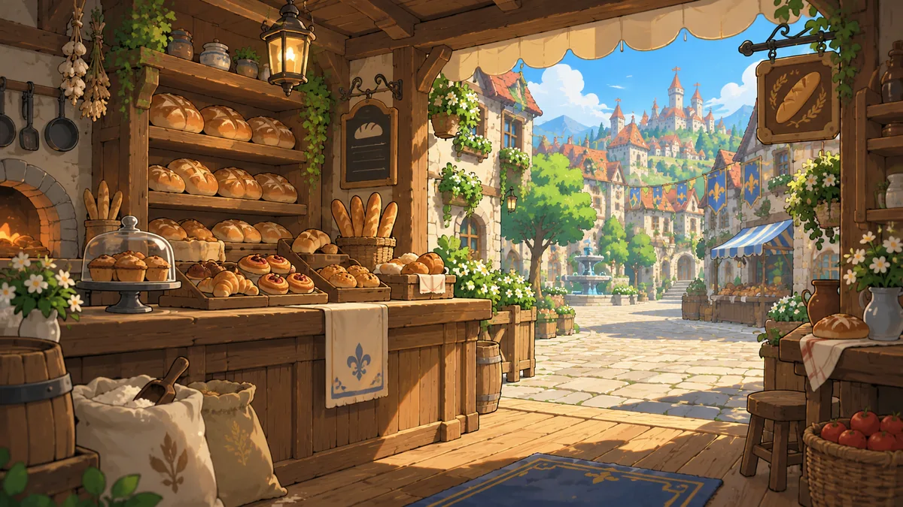
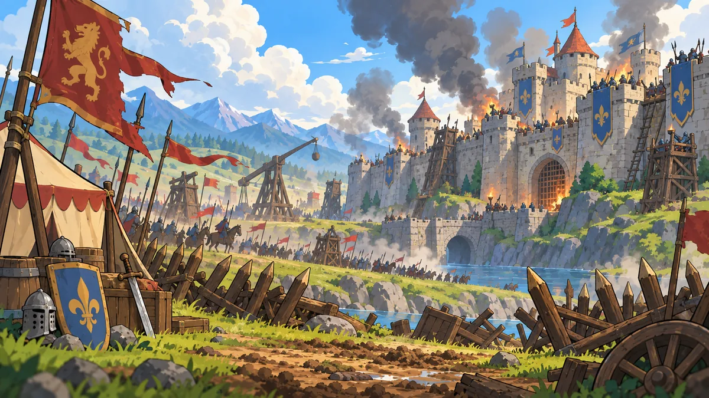

Welcome to your own little world.
让世界，
生长出你的
想象。
爷爷留下的土地，由你来传承。与朋友建设、探索，也用 AI 为这片世界写下新的名字、故事和节日。
自己的 API Key八类世界内容
Create / Collect / Play
把灵感，种进世界。
从一句描述，到一份可以带进游戏的内容库。
Welcome to Grandpas Land
一片土地，
许多种生活的可能。
你继承了爷爷留下的一片土地。开垦、建造、结识居民，与朋友在同一片世界里冒险。这片土地的故事，也可以由你亲手续写。
自定义城市、人物、公司与家族的名字，再为世界创作支线、事件、节日和特定 NPC 内容。可执行的游戏效果以游戏当前支持的规则为准。
The next chapter
在下一段旅程里，
相见。
Steam 商店页即将开放。上线后，这里会提供商店与愿望单入口。
Steam · 敬请期待Somewhere, a story begins.
世界的不同侧面。
从海风吹拂的港口，到灯火温暖的小店，再到远方的城堡。

海风与远航
小径的尽头，是更辽阔的世界。

烟火与日常
街角的一盏灯，也藏着新的故事。

城堡与冒险
当远方响起号角，新的篇章展开。